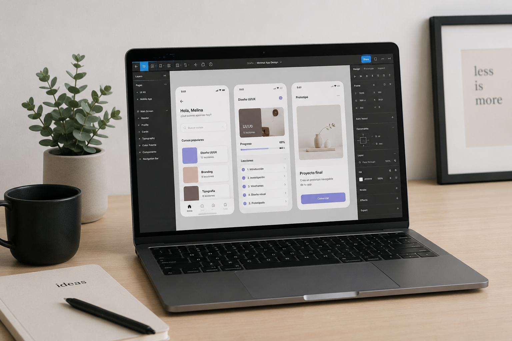

Bienvenidos!
Me llamo Melina, soy estudiante avanzada de Diseño Gráfico y traductora inglés–español, enfocada en diseño digital y experiencias web.
Me llamo Melina, soy estudiante avanzada de Diseño Gráfico y traductora inglés–español, enfocada en diseño digital y experiencias web.
Tengo experiencia en el desarrollo de piezas visuales para web y redes sociales, trabajando en la creación de funnels, páginas web y contenido digital.
Me interesa el diseño minimalista, la comunicación clara y la creación de soluciones digitales funcionales. Me estoy especializando en UX/UI, incorporando herramientas como Figma y Framer para mejorar la experiencia de usuario en productos digitales.
